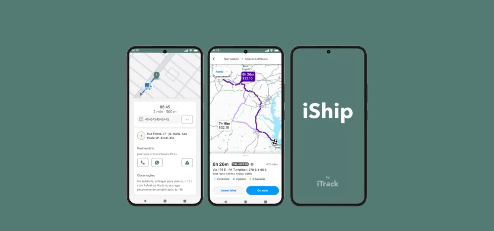
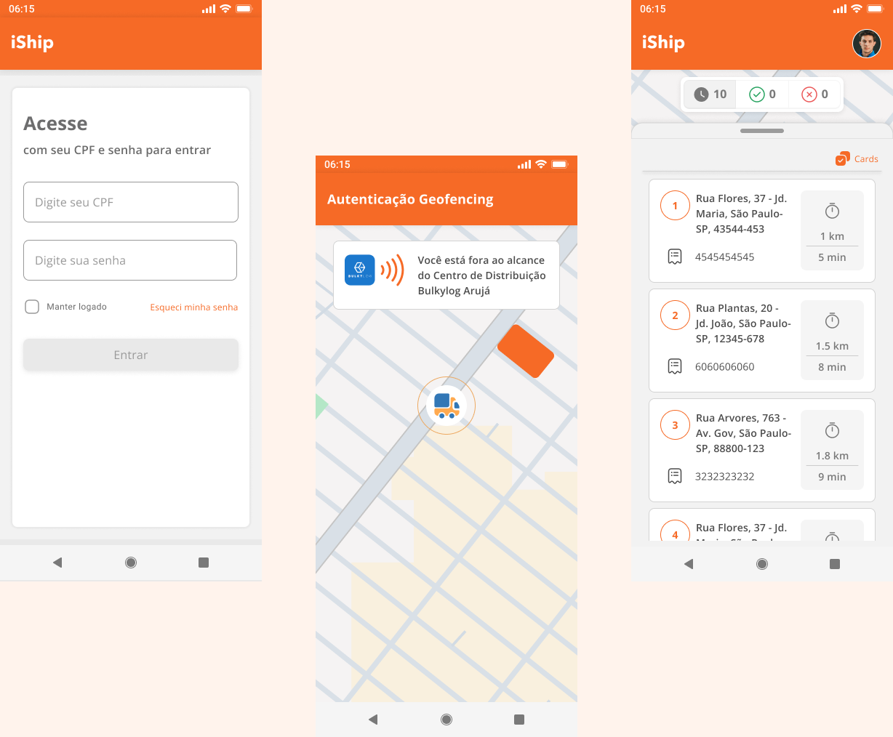
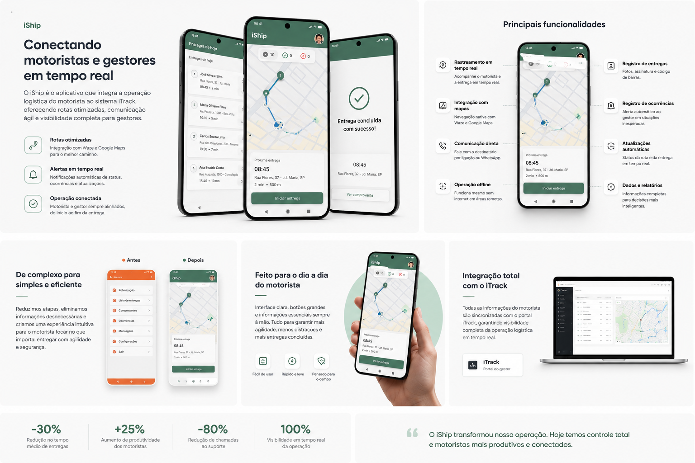
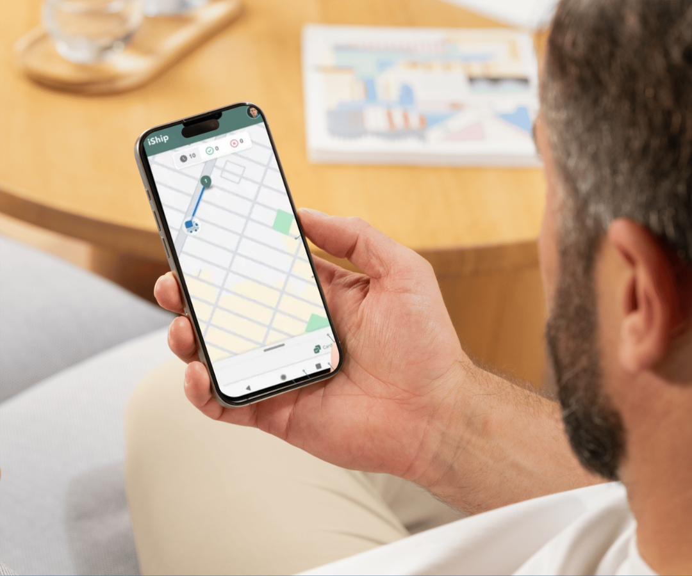

iShip
A mobile app connecting drivers and logistics managers in real time, simplifying deliveries, route management and operational communication.

Overview
iShip is a mobile application designed to connect field drivers to the iTrack ecosystem, allowing managers to monitor deliveries, routes, incidents and operational status in real time.
The project focused on simplifying the driver's experience throughout the delivery journey by reducing unnecessary steps, improving information clarity and making critical actions faster to perform.
I worked on redesigning the mobile experience by analyzing the previous version of the app, mapping critical workflows and proposing a simpler, more intuitive interface optimized for field operations.
Designing for people constantly on the move
Drivers handling large volumes of deliveries need to consult routes, report incidents, communicate with recipients and update delivery statuses quickly and accurately.
Since the app is primarily used on the road, the experience must rely on minimal interactions, clear prioritization of information and highly visible actions, even under pressure, movement or unstable connectivity.
The challenge
Redesign an operational mobile experience capable of reducing complexity, accelerating task completion and keeping drivers and managers connected throughout the entire delivery process.
Analyzing the previous experience
The previous concept presented a more fragmented structure, requiring multiple paths and screens to complete common tasks. Using this material as a starting point, I conducted a usability review to identify friction points and opportunities for simplification.

Legacy workflow used as a foundation for analysis, diagnosis and redesign.
From journey mapping to mobile redesign
My work focused on understanding the driver's daily routine, analyzing the existing experience and reorganizing workflows to make operations more efficient and straightforward.
Fewer screens, faster actions

Visual overview of the experience evolution, key features and integration with iTrack.
A mobile app designed to centralize the driver's routine
The new experience was organized around the most frequent tasks in the delivery journey: viewing deliveries, starting a route, checking recipient details, reporting incidents and confirming delivery completion.
The goal was to transform the app into a simple operational tool, connected to the iTrack portal and prepared to support real-time decisions.
Redesign principle
Each screen should quickly answer three questions: where am I, what do I need to do now and what is the next step in the delivery.

Main app features, including routes, incident reporting, communication and real-time updates.
Fully integrated with iTrack
iShip does not work as an isolated app. Information registered by the driver is synchronized with the iTrack portal, allowing managers to monitor routes, deliveries, incidents and operational productivity in real time.
Completes deliveries, reports incidents and updates statuses.
Centralizes field operations into a single mobile experience.
Provides real-time data and monitoring for logistics managers.
More clarity for drivers, more visibility for managers
Reduced complexity in the main actions of the delivery journey.
Integration between drivers in the field and managers in the iTrack portal.
Interface designed for fast, direct use with low cognitive load.
What this project strengthened in my design practice
iShip reinforced the importance of designing mobile experiences around real usage contexts. Unlike desktop systems, an operational mobile app needs to be direct, readable and efficient even in high-pressure environments.
It was also an important project to deepen my understanding of logistics UX, product integration and workflows that connect users in the field to management systems.
More projects
Explore other products and experiences I’ve designed.